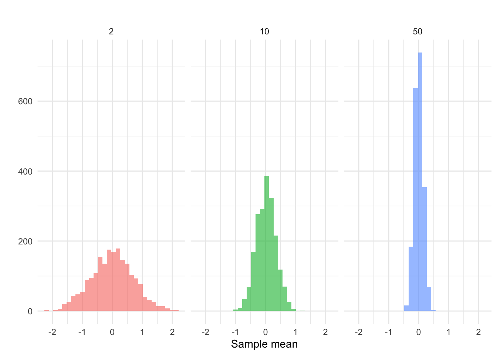

Dynamic Visualization using Shiny
Motivating question: In statistics, you learned that when we sample, we want large sample sizes. Why?
If we drew \(k = 2000\) random samples of size \(n = 2\), \(n = 10\), and \(n = 50\), respectively, we would get three sampling distributions. We could then visualize each sampling distribution with a plot:
Take a look at each plot. What is the visualization showing you? By displaying this information visually, what do you learn?
Now, take a look at a different way of using a visualization to convey this point: visualization of sampling ditributions.
Static vs. Dynamic Visualization
The visualizations above are examples of static and dynamic visualizations, respectively. What makes the latter visualization dynamic is that the user can alter the inputs to change what the visualization shows. It is not simply fixed by the author/developer/etc, it is interactive: the user is able to alter what is rendered.
Other examples…
What if you were interested in identifying an optimal strategy for network disruption? (check out this network disruption app).
Or, if you wanted to collection some data? (check out this network data collection tool)
What is Shiny and How it Works
Shiny is an R framework for building interactive web applications directly from R code. It allows you to take static analyses and visualizations, like a ggplot, and turn them into dynamic, user-driven experiences that run in a web browser.
With Shiny, users can:
- Adjust inputs (sliders, dropdowns, buttons)
- Filter data
- Change model parameters
- Instantly see updated visualizations and results
Core Concepts
Shiny apps are built around three simple ideas:
The UI (User Interface), which is what the user sees. It includes the layout of the page, input controls (sliders, dropdowns, checkboxes), and output placeholders (where plots, tables, or text will appear). The UI defines the structure of the app.
The Server, this is what happens behind the scenes. It is where we put the instructions for what is produced in the UI, where data is processed, and where calculations happen. The server connects user inputs to outputs.
Reactivity is what makes Shiny dynamic (and powerful). Reactivity means that code reruns automatically when inputs change. Think of it like Excel cell recalculation: If one cell changes, any dependent cells update automatically. Shiny works the same way in that changes to the inputs trigger update which refresh the output.
Let’s go back to the visualization of sampling ditributions app and take a closer look.
An Example
Static Visualization
Suppose we created a plot using this code:
library( ggplot2 )
n <- 100
x <- rnorm( n )
ggplot(data.frame(x = x), aes(x = x)) +
geom_histogram(bins = 30, fill = "steelblue", alpha = 0.7) +
labs(title = paste("Histogram of", n, "random normals"),
x = "value", y = "count") +
theme_minimal()We have a very simple plot of random draws from a standard normal distribution. What if we wanted to increase the number we took? Decrease it?
Dynamic Visualization
Let’s create a very simple Shiny app. As we do this, ask yourself: What is part of the UI? What is part of the server? Where is reactivity happening?
To get started, create a new R script file and add this code to it:
library( shiny )
library( ggplot2 )
ui <- fluidPage(
titlePanel("Interactive Histogram"),
sidebarLayout(
sidebarPanel(
sliderInput("n", "Sample size (n):", min = 10, max = 1000, value = 100, step = 10)
),
mainPanel(
plotOutput("hist")
)
)
)
server <- function(input, output) {
output$hist <- renderPlot({
x <- rnorm(input$n)
ggplot(data.frame(x = x), aes(x = x)) +
geom_histogram(bins = 30, fill = "steelblue", alpha = 0.7) +
labs(title = paste("Histogram of", input$n, "random normals"),
x = "value", y = "count") +
theme_minimal()
})
}
shinyApp(ui = ui, server = server)Ok, you just created your first Shiny app! I knew you had it in you. Let’s walk through what we did.
The first part loads the libraries to get the functions needed to build the app and the plot:
library( shiny )
library( ggplot2 )Next, we have our two key pieces, the ui and the server. Let’s look at the code for defining the user interface:
ui <- fluidPage(
titlePanel("Interactive Histogram"),
sidebarLayout(
sidebarPanel(
sliderInput("n", "Sample size (n):", min = 10, max = 1000, value = 100, step = 10)
),
mainPanel(
plotOutput("hist")
)
)
)We are first defining an object called ui which will define the user interface. Look at your app and see what the user side features are. Can you find them in the code?
We start the user interface with the fluidPage() function. Inside this function we have titlePanel() which gives the title.
We then we have sidebarLayout() which prepares the sidebar. Inside the sidebar layout we have sidebarPanel() that has sliderInput() inside it. What does this line do? Look at the app and think about what is happening.
Finally, we have the mainPanel() function with the plotOutput() function designating an object "hist" to be plotted.
Now, let’s examine the server side:
server <- function(input, output) {
output$hist <- renderPlot({
x <- rnorm(input$n)
ggplot(data.frame(x = x), aes(x = x)) +
geom_histogram(bins = 30, fill = "steelblue", alpha = 0.7) +
labs(title = paste("Histogram of", input$n, "random normals"),
x = "value", y = "count") +
theme_minimal()
})
}We define a function called server which is going to be our workhorse. It is going to take an input that the user can alter in the UI. Anytime a change is made by the user, this is going to pass through our server object and change what is rendered in output.
Remember that we defined an object called "hist" in UI using plotOutput(). Here we are defining what that will be. Specifically, we use the renderPlot() function. This is getting a bit more complicated, so let’s take each line:
x <- rnorm(input$n)creates an objectx, which is a random draw from a normal distribution,rnorm, where the size is defined by the user withinput$n. Look back to the UI, where do you see"n"? Look at what we just did: we built into our plot function the changes that are being made by the user in the UI.ggplot(data.frame(x = x), aes(x = x)) +… defines a plot object, usingggplot(), that is based on thexobject.
And that is really it. Much of the code is tweaking the ggplot object.
Now for our last piece:
shinyApp(ui = ui, server = server)Here, we are just running the shinyApp() function and defining the arguments that function needs to operate: the UI and the server.
Functions
As you can see, there are a number of functions that we use to build the app. You can browse the functions that are build in shiny by typing help( package = "shiny" ). There are also many extensions that have been written:
Using AI to Build Shiny Apps
Exercise
Q&A and Extensions
Here are some really good FREE books:
- Mastering Shiny is the first stop for moving forward with learning how to use Shiny.
(https://unleash-shiny.rinterface.com/){target=“_blank” rel=“noopener”} (https://engineering-shiny.org/index.html){target=“_blank” rel=“noopener”}